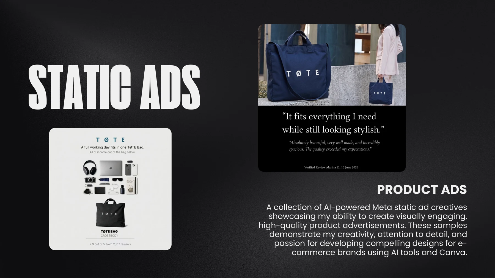
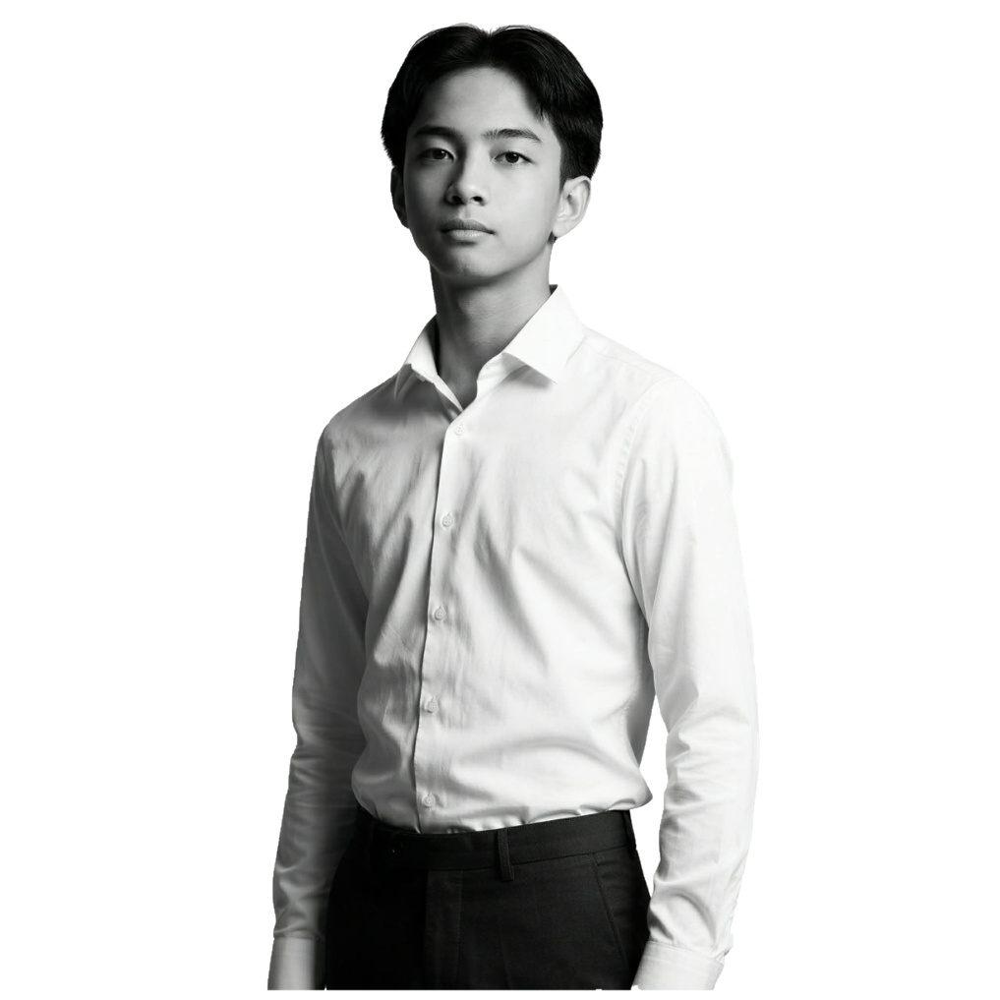

Virtual Assistant · Graphic Designer
MARKSOLIVA
I create polished digital visuals, social media graphics, promotional creatives, and print-oriented layouts—with a creative mindset and a customer-support foundation.
Scroll to explore ↓
01 / About
Creative work.
Reliable support.
A practical blend of visual design, communication, organization, and a willingness to keep learning.
I turn project briefs into clear visual concepts, then refine the details through feedback.
I’m Mark Soliva, a Virtual Assistant and Graphic Designer. My customer service experience at Alorica helped build my professional communication, problem-solving, and customer-care skills. Alongside that experience, I create digital designs using Canva Pro, CapCut, and AI-assisted tools.
ExperienceFreelance graphic design · Project-based
Customer Service Representative · Alorica
Customer Service Representative · Alorica
EducationBS Architecture studies
New Era University
New Era University
02 / Selected work
Made with
intention.
Selected work from the portfolio: static advertising, product campaigns, brand concepts, and visual layouts. Open a sample to view it larger.
03 / Skills & approach
Good work
starts here.
Tools and strengths I bring to creative projects and support tasks.
Canva Pro
Digital design, social graphics, promotional assets, and layout work.
CapCut
Video editing and creative content support.
AI-assisted tools
ChatGPT and Gemini for ideation and creative workflows.
Communication
Customer support, active listening, and professional communication.
Problem-solving
Working through customer concerns and refining creative work from feedback.
Adaptability
Learning new tools, adjusting to tasks, and staying organized.
04 / Experience
Experience
in practice.
Freelance Graphic Designer
Independent projects · Project-basedCreate digital design assets including social media graphics, promotional materials, static advertising creatives, and print layout concepts. Develop visual directions aligned with each brief, audience, and brand style.
Customer Service Representative
Alorica · Marikina, Philippines · September 2026 – October 2026Completed communication and product training, followed by live-operations nesting for a high-volume U.S. retail account. Handled customer inquiries involving order status, account management, billing, and product-related concerns while following client policies and service procedures.
05 / Contact
Let’s make
something.
Have a project or opportunity in mind? Reach out and let’s talk.